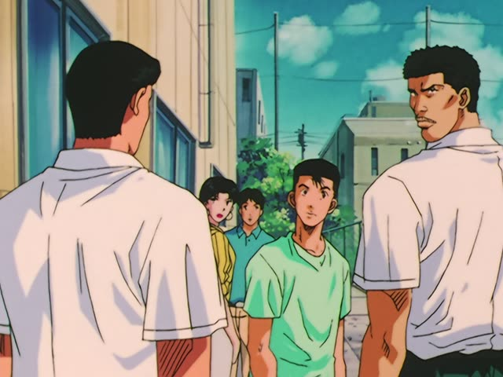

～か (Inside a sentence)
Last Samurai Standing · Episode 5
この先、何が起こるか分かりません。
"I don't know what will happen from here."
A question can sit inside a bigger sentence: question word + plain form + か, then 分かる, 知る, 教える, 覚える... 何が起こるか分からない = "I don't know what will happen".
On this card, Futaba thanks Shujiro before the danger ahead. 分かりません makes it polite.
No question word? Use かどうか (whether or not). That has its own page.

Slam Dunk · Episode 86
何を考えてるか分からないやつだから。
"Because he's a guy you never know what he's thinking."
On this card, someone describes Sendo. 何を考えてるか: what he's thinking, as a piece of the sentence.
Quick Examples
Your friend asks about the party.
何時に始まるか知ってる？
"Do you know what time it starts?"
CasualAsking at a station.
どこで乗り換えるか教えてください。
"Please tell me where to change trains."
PoliteLost keys.
どこに置いたか覚えてない。
"I don't remember where I put them."
CasualAt the office.
誰が来るかまだ分かりません。
"We don't know yet who's coming."
PoliteWith and without
何時に始まる？
"What time does it start?" A question.
何時に始まるか知ってる？
"Do you know what time it starts?" The question sits inside.
Examples from Media
Oishinbo · Episode 26
毎晩ご主人は、どこにいるか知っていますか？
"Do you know where your husband is every night?"
Kekkon Dekinai Otoko · Episode 7
夏美さんのお父さんの話って、何なのか教えてください。
"Please tell me what it is about Natsumi's father."
Death Note · Episode 28
どこ行きだか分かりますか？
"Do you know where it's headed?"
After a noun: だか, or just か.
Dungeon Meshi · Episode 17
冒険の途中、何度彼に助けられたか分からないし
"I can't count how many times he saved me on our adventures"
Samurai Champloo · Episode 1
なんで私がここにいるか知りたい？
"Want to know why I'm here?"
Good Morning Call · Episode 9
何て言ったらいいか分かんないな。
"I don't know what to say."
Odd Taxi · Episode 9
結局、あれどうなったか覚えてる？
"Do you remember how that ended up?"
Dungeon Meshi · Episode 6
今何歳か教えてよ～。
"Tell me how old you are!"